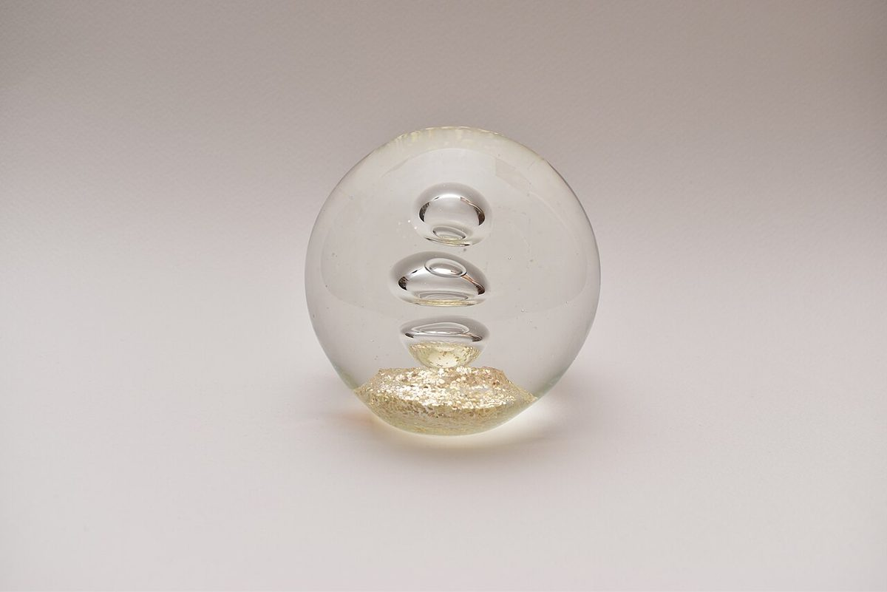
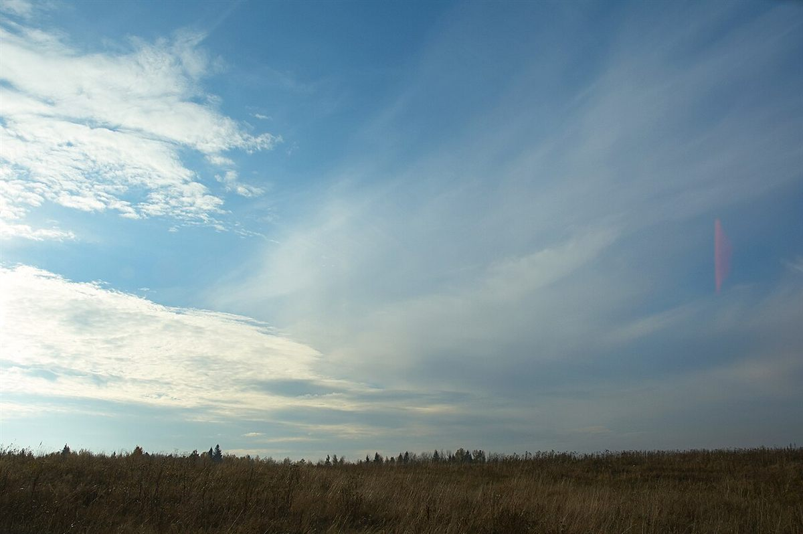
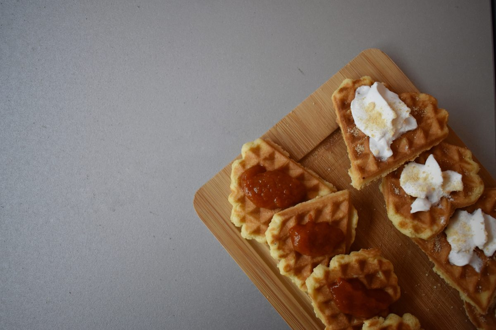
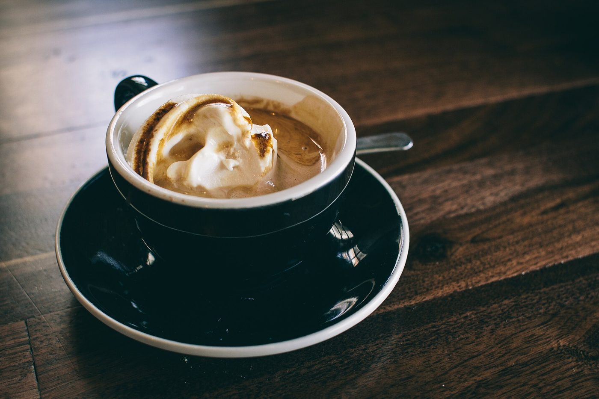
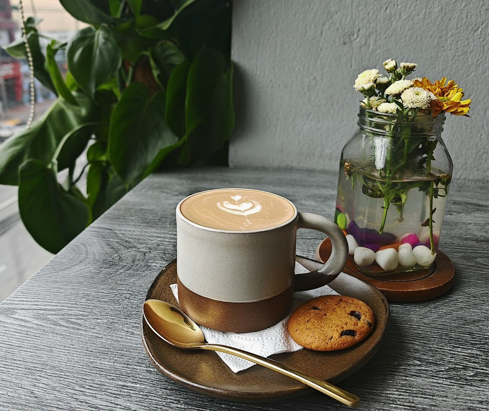
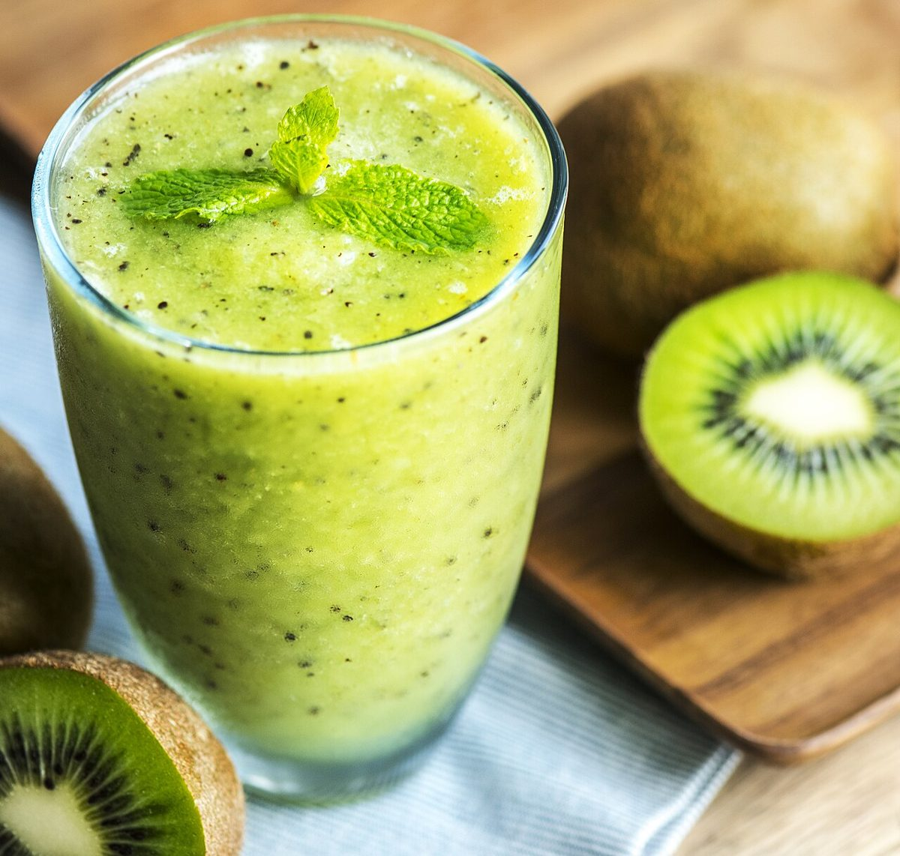
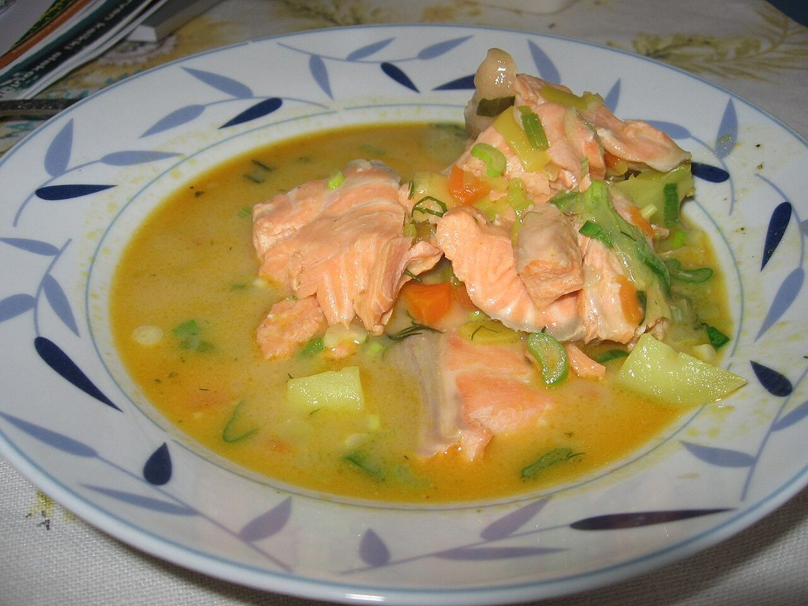
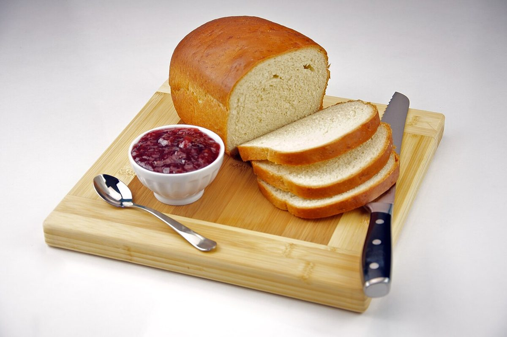

岡山県津山市大田・Globe Sports Dome内のカフェ
ガラスのドームの下で、
ひと息つく一杯とワッフルを。
Globe cafeは、津山産の米粉を使ったワッフルと、心をほぐす一杯を楽しめるカフェです。
Calm sea off Providenciales, Turks and Caicos Islands / Caicos Rentals / CC BY 4.0 / 撮影地: タークス・カイコス諸島
お店の由来・想い
ドームのカフェは、津山の米粉とともに。
紹介記事によると、Globe cafeはガラスのドームの外観が特徴のカフェで、以前は津山市内の別の場所で営業していました。グリーンヒルズにあったグラスハウスの跡地にスポーツクラブ「Globe Sports Dome」ができたことをきっかけに、2022年5月に移転・リニューアルしたとされています。所在地は津山市大田512(Globe Sports Dome内)です。
名物は、管理栄養士が監修した米粉の「Domeワッフル」。レギュラーには津山産の米粉を使い、もちもちした食感が特徴と紹介されています。Instagramのプロフィールでも「地元産米粉ワッフル」「心をほぐす1杯を」と案内されています。
情報源: おかやま旅ネット(紹介記事) / Instagram
店名「Globe」の意味は確認できていません。ページ内の「地球・球体」のイメージ(丸い枠、空や海の写真)は制作側のイメージで、お店の考えを示すものではありません。

Glass sphere with bubbles / Annatsach / CC BY-SA 4.0 / 撮影地: 撮影地不明 / 出典

Window in a cafe in San Gimignano (02182)2 / Rhododendrites / CC BY-SA 4.0 / 撮影地: イタリア・サン・ジミニャーノ

White Cumulus Clouds against Blue Sky / Lance Vanlewen / CC BY-SA 4.0 / 撮影地: 撮影地不明

Cloudy sky over the field in Russia. img 006 / Dmitry Makeev / CC BY-SA 4.0 / 撮影地: ロシア / 出典
メニュー・提供内容
ワッフルと、あたたかい一杯。
確認できた範囲では、米粉のワッフル、コーヒー、チャイラテなどのドリンクが紹介されています(季節限定の味もあるようです)。Instagramの投稿には、スムージー、スープ、サンドイッチなども見られます。写真はいずれも雰囲気を伝えるフリー素材で、実際の商品ではありません。
価格・営業時間・定休日・電話番号は変更されることがあるため、掲載せず「準備中」としています。最新情報はInstagramをご覧ください。

A cookie plate (内容は小さなワッフル) / Altitonantis / CC0 1.0 / 撮影地: 撮影地不明 / 出典

Black coffee cup (Unsplash) / Ross Parmly / CC0 1.0 / 撮影地: 撮影地不明 / 出典

Cappuccino, cookies, flowers in glass / Deepak-nsk / CC0 1.0 / 撮影地: ネパール / 出典

White coffee on the table / freestocks.org / CC0 1.0 / 撮影地: 撮影地不明 / 出典


Lohikeitto / Tuijasal / CC BY-SA 3.0 / 撮影地: 撮影地不明 / 出典

Homemade White Bread with Strawberry Jam / Evan Swigart / CC BY 2.0 / 撮影地: 撮影地不明 / 出典
口コミ(イメージ例)
こんなふうに楽しまれるかもしれません。
以下は制作側が作成したイメージ例であり、実在のお客様の声ではありません。
イメージ例ワッフルのもちもち感が好きで、仕事の合間に立ち寄りたくなります。
Aさん(イメージ)
イメージ例大きなガラスのドームの下で飲むコーヒーは、気分が切り替わる感じがします。
Bさん(イメージ)
イメージ例ひとりでもゆっくり過ごせそうな、落ち着いた雰囲気を想像しました。
Cさん(イメージ)